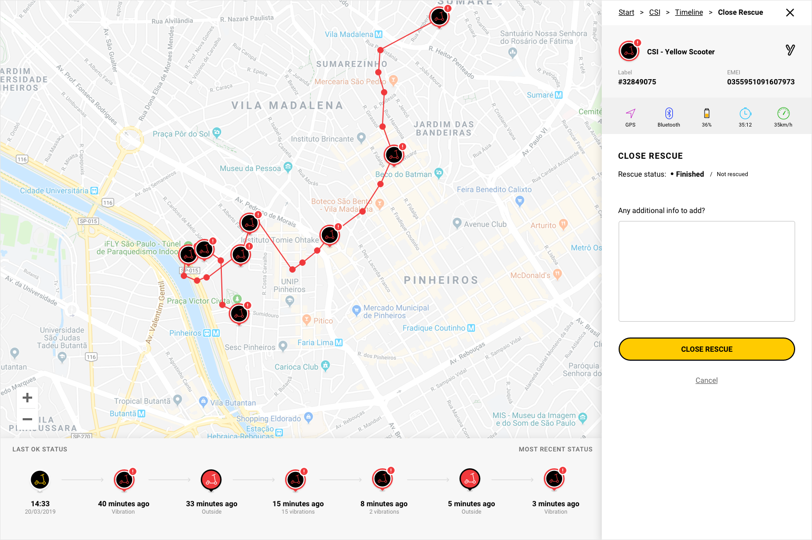

Grow Mobility
Sentinel
Challenge
After the merger between Yellow and Grin, the inventory of vehicles had a significant increase and it needed better tools to prevent theft in all cities Grow had operations.
The security team was growing strong, even recovering vehicles considered already lost, but couldn't act before a scooter or bike was stolen, knowing about it just after the loss happened.
Immersion
- Meetings with stakeholders - the security team - to discuss what the current tool couldn't deliver and why they needed more features
- Requirements from agents to get custom information for their own cities (timezone, type of vehicles available, etc)
- Constant validation with security supervisors and agents to validate each feature
- Close contact with development team to deliver a working prototype they could build in the short time available
Goal
The new Sentinel should give a complete vision of what is happening in real time and predict what's about to happen.
When something unexpected is going on, the system instantly fires notifications for the agents to act.
Open prototypeYou can track a pin by clicking on it or searching for its label or EMEI numbers.
After opening the vehicle you want to investigate there's information from the current trip and last signals it has sent to help decide if there is an anomaly or not.
The operator has a couple of options to start the job of recovering it in that screen.
The external agent informs what happened in the field and the internal person updates the system with information related to that rescue.
Feedback
Security team felt empowered when presented the prototype and started to make calculations of how many bikes and scooters they should be able to recover from now on.
One of the developers jokingly said it was so beautiful that he wanted bikes to be stolen so they could use this system for real hahaha.
Open prototype